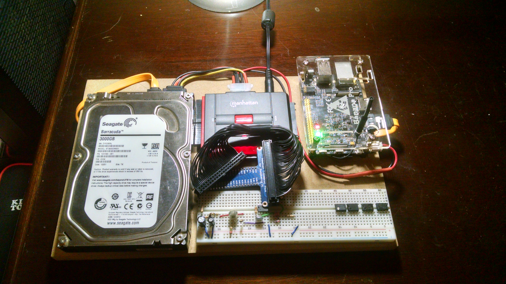

Computer Experience
My experience with using computers starts back in the late 90's when my uncle gave us our first desktop computer, a pc running windows 95. It took about an hour to boot up and then another 20 minutes to log in. We got a dial up internet connection shortly after and I can remember waiting all night long to download a single song. I mainly used it to listen to music, talk to friends on AIM, and play games.
Since then I have used computers on a daily basis. My family went through several hand me down desktop pcs before I finally got my own computer around 2007, a macbook laptop. It was certainly a step up from what I was used to but it wasn't until I graduated high school in 2012 that I decided to build my first desktop. This is still my main pc today although it has had some upgrades since then.
My Custom Build: Specifications
- AMD FX-8350 4.0GHz 8-Core Processor
- Asus Sabertooth 990FX Motherboard
- 32GB RAM
- 2x GeForece GTX-660 GPU in SLI
- 128GB Corsair SSD
- 256GB Samsung SSD
- 3TB Western Digital HDD
- Corsair H100 Cpu Cooler
- 750W Power Supply
- 2x Asus 24" Monitors
- Corsair K65 Mechanical Keyboard
My home server project - codename "ESerV"
Over the summer of 2016 I decided to build a small home server for learning and development purposes. I had no experience with servers in any sense, either hardware or software wise, and so I set off to research from the ground up. After a few weeks of reading stack overflow and digital ocean posts my criteria were established and I began shopping. I decided on the Banana Pro board, a knock off of the popular Raspberry Pi. It is credit card sized, uses barely any power, has gigabit ethernet, and a sata port, check out the full specs below.
- ARM cortex-A7 dual-core CPU @ 1.0GHz
- 1GB DDR3 SDRAM
- H.264 high profile 1080p@30fps or 720p@60fps encoding
- 10/100/1000Mbps ethernet & 802.11 WiFi
- Mutil-format FHD video decoding, including Mpeg1/2, Mpeg4, H.263, H.264, etc
- Onboard SATA 2.0 Interface
- 30 GPiO Pins
- Runs on a Micro SD Card